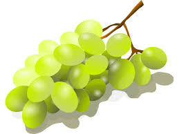

청포도 는 포도의 일종이다. 다 익어도 녹색 빛을 띄는 포도를 말한다. 품종으로는 샤인머스캣, 세네카, 나이아가라, 톰슨 시들리스 따위가 있으며 적포도보다 포도 특유의 풋내 섞인 향이 강하며 껍질째 먹는 경우가 많다. 당도가 높은 청포도는 백포도주 용으로 쓰인다.
이전에는 국내에서 청포도라고 하면 보통 세네카 종 등 알이 둥근 청포도가 유통되었지만, 칠레와의 FTA 이후인 2010년초는 국내에 유통되는 청포도의 절대 다수는 씨 없는 품종인 톰슨 시들리스였다. 맛의 차이는 상당히 큰 편. 칠레산 씨 없는 청포도(톰슨 시들리스)가 시장을 장악한 탓에 오히려 씨 있는 청포도를 찾기가 더 힘들게 되었다. 씨가 없어서 먹기 편한데다, 껍질과 함께 먹기 좋은 특성이 국내 소비자들에게 어필한 것. 허나 2012년~2013년에 들어서 경상북도를 필두로 샤인 머스켓의 국내 생산량이 높아져 해외 수출까지 할 정도로 성장했기에 더욱 다양한 종류의 청포도를 맛 볼 수 있게 되었다.